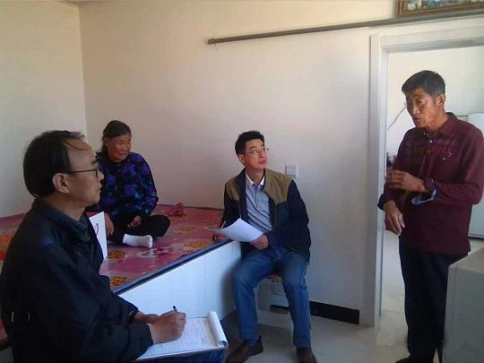
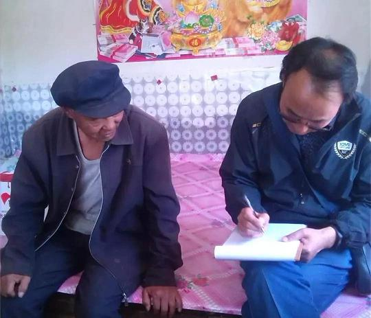

2018年8月8日至10日，农工党赤峰市委调研组根据农工党自治区委《关于开展“加强对我区因病致贫人员的精准帮扶，助力脱贫攻坚”的课题调研的通知》要求，深入松山区岗子乡，翁牛特旗毛山东乡、桥头镇等地走访调研。

期间，发放了2018年健康扶贫调研问卷、2018年健康扶贫跟踪调查问卷，入户走访了50户因病致贫的家庭，认真听取各村负责人关于基本情况的介绍，并与驻村干部深入座谈交流，详细了解当地脱贫攻坚工作开展情况，确保调查问卷填写的信息真实准确，以期在调研报告中提出具有针对性和可行性的对策与建议。

此次为期3天的调研，旨在跟踪调研因病致贫（返贫）户的就业情况、家庭生产、生活及享受扶贫政策等情况，结合近年来健康扶贫工作的主要做法和成效，根据每户家庭在住房、教育、健康、家庭成员等方面的变化，认真总结分析致贫原因，为形成数据准确、内容完善、措施合理，理由充分的调研报告打下坚实基础。